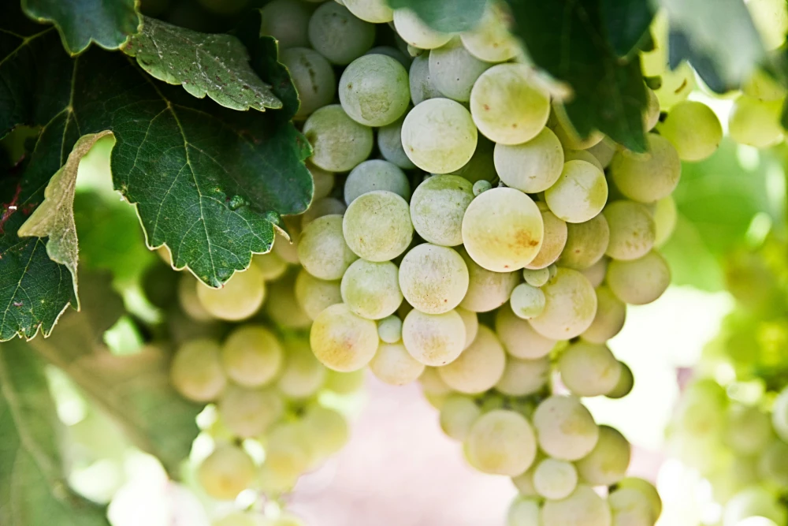

Viner från Sverige
2025-03-23
Idag tänkte jag skriva lite om viner från Sverige för tro det eller ej, det görs även vin i Sverige fast det är ett sådant nordligt land. Enligt historian började man tillverka viner i Sverige redan på 1500-talet men då av olika bär och frukter. Det riktiga vinet introducerades i Sverige i och med kyrkan och nattvarden. Under 1990-talet kunde man börja göra vin i Sverige i och med hybriddruvor och annan teknik och Sverige har varit ett såkallat officiellt vinland sedan 1999. De flesta vingårdar som finns i Sverige ligger i de södra delarna som t ex Skåne, Blekinge, Halland, Öland och Gotland. I Sverige är det mestadels vita viner som produceras och en del mousserande vin av druvsorterna Solaris och Rondo. Dessa druvor är tåliga i ett svalt klimat, ger mycket frukt och har bra motstånd mot sjukdomar.
Ett problem som de svenska vingårdarna har är att de på grund av den strikta alkoholpolitiken inte kan sälja på några viner på sina gårdar utan måste först sälja dom till Systembolaget. På Systembolaget finns dock en hel del svenska viner att köpa för den som ärintresserad att testa vinutbudet med druvor odlade i Sverige.
Nedan kommer några förslag på vad man skulle kunna testa på en vinprovning. Det är tre vita viner och två rosé.
- Croix Fleurie Solaris, 2021. 297:-blommigt och druvigt vin med inslag av frukter som äpplen, fläder, citrus och kiwi.
- Hällåkra Vingård Margareta, 2023. 252:-friskt, fruktigt och strävt vin med inslag av marsipan, vita vinbär, havtorn och äppelcidervinäger.
- Pegasus Stål Flyinge Vingård, 2020, 295:-fruktigt vin med smak av färska örter, persika, gröna äpplen, krusbär och honungsmelon.
- Gutevin Levide Rosé, 2023, 220:-fruktig smak med inslag av jordgubbar, hallon, granatäpple och citrus.
- Österlenvins Råsa, 2023, 218:-ett fruktigt vin med smak av persika, jordgubbar, granatäpple och blodapelsin.
En nackdel med de svenska vinerna kan vara att dom är lite dyra om man jämför med andra viner men det kan det vara värt. Hoppas ni får en trevlig vinprovning och skriv gärna en kommentar om ni gillade vinerna!